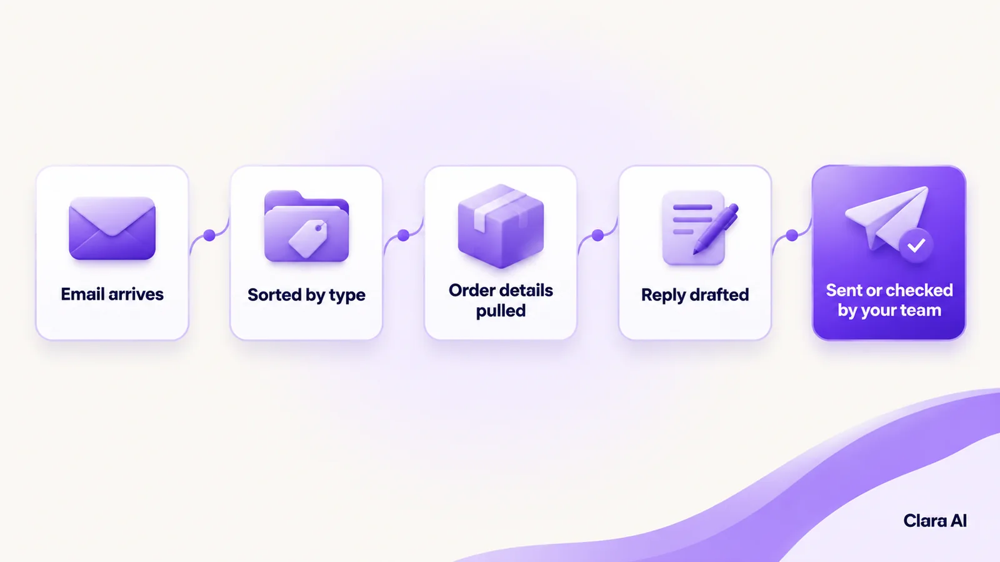
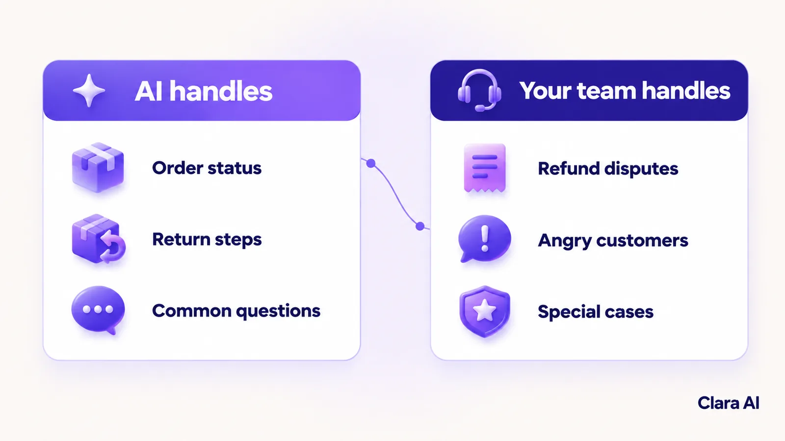

AI email support automation for e-commerce uses an AI agent to read each support email, sort it by type and urgency, pull the order details and draft a reply from your own policies. Routine replies can be sent automatically or checked first, and sensitive cases go to a person with the full context.
It is Monday morning, and a store's support inbox holds a weekend of mail. A customer asking where her parcel is sits at the top. Below it is a message about a damaged lamp. Further down, a marketplace buyer's message is close to its reply deadline. The agent on shift opens the newest email first, and the urgent one waits.
That is the daily cost of an overflowing inbox. This article explains AI email support automation for ecommerce: how the agent works, what to automate first, how replies are checked and where your team stays in charge.
Why do e-commerce support inboxes overflow?
Order volume grows faster than support teams do. The mail is also repetitive. Most of it falls into a few types: order status, returns, refunds, damaged items, marketplace messages and wholesale enquiries. Five problems follow.
Slow first replies. Customers wait while agents work through the queue in the order mail arrived.
The wrong person picks it up. A wholesale enquiry lands with a returns agent and sits until someone forwards it.
Urgent issues get buried. A damaged-item complaint or a chargeback warning looks like any other email.
Agents copy the same answers. Skilled people spend the day pasting return steps and tracking links.
Marketplace deadlines. Marketplaces set response-time expectations for sellers, and slow replies can put a seller account at risk. Check each marketplace's current rules for the exact requirements.
How does an AI email support agent work?
The agent works through each email in six steps.
It reads. It reads the message, however the customer has worded it.
It sorts. It labels the email by type, such as order status, return, refund, damaged item, marketplace message or wholesale, and by urgency.
It pulls order details. It looks up the order, the tracking status and the purchase date in your store or order system.
It drafts a reply. It writes in your brand's tone, using your own policies, such as return terms and shipping terms, and not general internet knowledge.
It sends or routes. Simple replies go out, or wait for a person's quick check, as you decide. Other emails go to the right person.
It hands over when needed. Chargebacks, legal matters and angry customers go to a person with the email, the order details, the draft and a short summary.

How a support email moves from the inbox to a checked reply.
What should you automate first, and where does a human stay in the loop?
Start with emails that are frequent, factual and low risk.
Automate first:
order status and tracking questions
return instructions and label requests
common questions about shipping, products and policies
Keep with people:
refund disputes and exceptions to policy
chargebacks and legal threats
angry or upset customers
damaged-item claims that need a decision
wholesale pricing and special cases

The agent takes routine emails. Your team takes the sensitive ones.
Even for the types you automate, a person can review drafts at the start. When your team edits a draft, that correction shows where the policy text or the agent's rules need fixing. The agent is also built to say when it is unsure, and an unsure email goes to a person.
How do you check replies for policy and marketplace compliance before they go out?
A fast wrong reply is worse than a slow right one, so every draft passes a check before it is sent.
Policy match. Does the reply follow your return, refund and shipping policies, and does it quote the right terms for this order?
No unapproved promises. The reply must not offer refunds, discounts or delivery dates your policy does not allow.
Marketplace rules. Your team lists the messaging rules for each marketplace you sell on, and the check uses that list for marketplace messages.
Accuracy. The order details in the reply must match the order record.
Fail safe. If a check fails, or the agent is unsure, the email goes to a person and is not sent.
How have e-commerce teams used this?
Clara AI has built three AI agents for Ergode, a US e-commerce company: an email support classifier that sorts incoming support emails, a compliance checker and a research agent. Every build is shaped around the client's own policies, systems and email mix.
How do you roll it out safely?
Do not switch on every inbox at once. A staged plan keeps the risk low and gives your team time to trust the drafts.
Phase one: one inbox, a few email types. Pick a single inbox and three or four types, such as order status and return steps.
Phase two: prove it on real emails. Run the agent beside your team. It drafts, and people review. Compare its sorting and drafts with what your team would have done.
Phase three: expand. Add email types, then more inboxes. Loosen the review only for types where the drafts have proved reliable.
What should you measure?
Measure before you start, so you can compare. Useful measures include:
time to first reply
how many emails the agent sorts correctly
how many drafts your team has to edit
how many emails are handed to a person, and why
the size of the backlog at the start of each day
These show whether the agent is helping or only adding a step. Review them each week with your support lead, and add a new email type only when the current ones hold steady.
Can a chatbot mean fewer emails arrive?
Often, yes. Many support emails ask something your website could have answered. The same policies and product knowledge can power an AI web chatbot on your store, so customers get an answer before they write. Our guide to an AI web chatbot for industrial product catalogue support shows the same idea in another industry.
An operations intelligence dashboard can then show which email types are most common, how long first replies take and where handovers pile up.
How Clara AI gets it built
Clara AI builds, deploys and manages custom AI agents like this in six steps. Clara AI's chatbots and calling agents work in English and Hindi. Languages for the email agent are confirmed during diagnosis.
Diagnose how email is handled today. We map your inboxes, who answers what and where emails stall. We measure the baseline: first-reply time and backlog.
Collect your material. You share your policies, past emails and replies, and access to your order system. Clara AI delivers a first demo within 7 days of receiving your material.
Agree the rules. Your team decides which email types the agent handles, what it may send alone and who receives each handover.
Build and test on your real emails. Past emails go through the agent, and every weak draft is corrected before launch.
Run beside your team. The agent goes live on one inbox while your team reviews drafts and steps in.
Keep managing and improving. We track results against the baseline, add email types as the drafts prove reliable and keep refining.